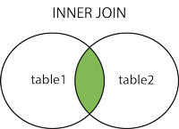
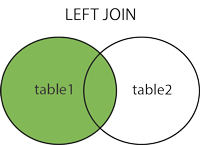
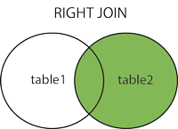
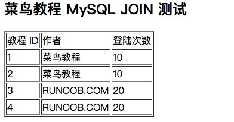

MySQL 結合の使用
前の章では、1つのテーブルからデータを読み取る方法を学びました。これは比較的簡単ですが、実際のアプリケーションでは複数のデータテーブルからデータを読み取る必要がよくあります。
この章では、MySQL の JOIN を使用して2つ以上のテーブルからデータをクエリする方法を紹介します。
SELECT、UPDATE、DELETE ステートメントで MySQL の JOIN を使用して、複数のテーブルを結合してクエリできます。
JOIN は機能に応じて、おおよそ次の3つのタイプに分類されます：
- INNER JOIN（内部結合、または等値結合）2つのテーブルでフィールドが一致する関係のレコードを取得します。
- LEFT JOIN（左結合）：右側のテーブルに一致するレコードがない場合でも、左側のテーブルのすべてのレコードを取得します。
- RIGHT JOIN（右結合）：LEFT JOIN とは逆に、左側のテーブルに一致するレコードがない場合でも、右側のテーブルのすべてのレコードを取得します。
この章で使用するデータベース構造とデータのダウンロード：runoob-mysql-join-test.sql。
INNER JOIN
INNER JOIN は、2つのテーブルで結合条件を満たす一致する行を返します。以下は INNER JOIN ステートメントの基本構文です：
SELECT column1, column2, ... FROM table1 INNER JOIN table2 ON table1.column_name = table2.column_name;
パラメータの説明：
column1,column2, ... は選択する列の名前です。もし*使用すると、すべての列を選択することを意味します。table1,table2は結合する2つのテーブルの名前です。table1.column_name = table2.column_nameは結合条件で、2つのテーブルで照合に使用する列を指定します。
簡単な INNER JOIN：
SELECT orders.order_id, customers.customer_name FROM orders INNER JOIN customers ON orders.customer_id = customers.customer_id;
上記の SQL ステートメントは、結合条件を満たす orders テーブルと customers テーブルから、注文 ID と顧客名を選択します。
2. テーブルエイリアスを使用する：
SELECT o.order_id, c.customer_name FROM orders AS o INNER JOIN customers AS c ON o.customer_id = c.customer_id;
上記の SQL ステートメントは、テーブルエイリアス o と c を orders テーブルと customers テーブルのエイリアスとして使用します。
3. 複数テーブルの INNER JOIN：
SELECT orders.order_id, customers.customer_name, products.product_name FROM orders INNER JOIN customers ON orders.customer_id = customers.customer_id INNER JOIN order_items ON orders.order_id = order_items.order_id INNER JOIN products ON order_items.product_id = products.product_id;
上記の SQL ステートメントは、orders、customers、order_items、products の4つのテーブルの結合に関わります。注文 ID、顧客名、製品名を選択し、これらのテーブルの関連列を結合します。
4. WHERE 句を使用したフィルタリング：
SELECT orders.order_id, customers.customer_name FROM orders INNER JOIN customers ON orders.customer_id = customers.customer_id WHERE orders.order_date >= '2023-01-01';
上記の SQL ステートメントは、INNER JOIN の後に WHERE 句を使用して、注文日が '2023-01-01' 以降の注文をフィルタリングします。
LEFT JOIN
LEFT JOIN は、左側のテーブルのすべての行を返し、右側のテーブルで一致する行を含みます。右側のテーブルに一致する行がない場合は、NULL 値が返されます。以下は LEFT JOIN ステートメントの基本構文です：
SELECT column1, column2, ... FROM table1 LEFT JOIN table2 ON table1.column_name = table2.column_name;
1. 簡単な LEFT JOIN：
SELECT customers.customer_id, customers.customer_name, orders.order_id FROM customers LEFT JOIN orders ON customers.customer_id = orders.customer_id;
上記の SQL ステートメントは、顧客テーブルの顧客 ID と顧客名を選択し、左側のテーブル customers のすべての行と、一致する注文 ID（存在する場合）を含みます。
2. テーブルエイリアスを使用する：
SELECT c.customer_id, c.customer_name, o.order_id FROM customers AS c LEFT JOIN orders AS o ON c.customer_id = o.customer_id;
上記の SQL ステートメントは、テーブルエイリアス c と o をそれぞれ customers テーブルと orders テーブルの名前の代わりに使用します。
3. 複数テーブルの LEFT JOIN：
SELECT customers.customer_id, customers.customer_name, orders.order_id, products.product_name FROM customers LEFT JOIN orders ON customers.customer_id = orders.customer_id LEFT JOIN order_items ON orders.order_id = order_items.order_id LEFT JOIN products ON order_items.product_id = products.product_id;
上記の SQL ステートメントは、customers、orders、order_items、products の4つのテーブルを結合し、顧客 ID、顧客名、注文 ID、製品名を選択します。左結合により、order_items または products に一致する行がない場合でも、顧客と注文の情報が返されます。
4. WHERE 句を使用したフィルタリング：
SELECT customers.customer_id, customers.customer_name, orders.order_id FROM customers LEFT JOIN orders ON customers.customer_id = orders.customer_id WHERE orders.order_date >= '2023-01-01' OR orders.order_id IS NULL;
上記の SQL ステートメントは、LEFT JOIN の後に WHERE 句を使用して、注文日が '2023-01-01' 以降の注文と、一致する注文がない顧客をフィルタリングします。
LEFT JOIN は一般的な結合タイプであり、特に左側のテーブルのすべての行を返す必要がある場合に使用されます。右側のテーブルに一致する行がない場合、関連する列は NULL として表示されます。LEFT JOIN を使用する際は、結合条件を理解し、要件に応じて結果をフィルタリングしてください。
RIGHT JOIN
RIGHT JOIN は、右側のテーブルのすべての行を返し、左側のテーブルで一致する行を含みます。左側のテーブルに一致する行がない場合は、NULL 値が返されます。以下は RIGHT JOIN ステートメントの基本構文です：
SELECT column1, column2, ... FROM table1 RIGHT JOIN table2 ON table1.column_name = table2.column_name;
以下は簡単な RIGHT JOIN の例です：
SELECT customers.customer_id, orders.order_id FROM customers RIGHT JOIN orders ON customers.customer_id = orders.customer_id;
上記の SQL ステートメントは、右側のテーブル orders のすべての注文 ID を選択し、左側のテーブル customers の一致する顧客 ID を含みます。customers テーブルに一致する顧客 ID がない場合、関連する列は NULL として表示されます。
開発プロセスでは、RIGHT JOIN はあまり使用されません。LEFT JOIN とテーブルの順序を入れ替えることで同じ効果を実現できるからです。例えば、上記のクエリは LEFT JOIN を使用して書き換えることができます：
SELECT customers.customer_id, orders.order_id FROM orders LEFT JOIN customers ON orders.customer_id = customers.customer_id;
上記の SQL ステートメントは同じ結果を返します。LEFT JOIN と RIGHT JOIN は対称的だからです。実際の使用では、個人の好みや組織の規約に応じてどちらの形式を使用するかを選択できます。
コマンドプロンプトで INNER JOIN を使用する
INNER JOIN は、指定された結合条件に基づいて複数のテーブルを結合できるため、クエリで関連するデータを取得できます。
INNER JOIN を使用する際は、結合条件が正確であることを確認し、結合するテーブル間の関係を理解してください。
例
RUNOOB データベースには tcount_tbl と runoob_tbl という2つのテーブルがあります。
次の例を試してください：
テスト用データ
次に、MySQL のINNER JOIN（INNER を省略して JOIN を使用しても同じ効果です）を使用して上記の2つのテーブルを結合し、runoob_tbl テーブルのすべての runoob_author フィールドに対応する tcount_tbl テーブルの runoob_count フィールドの値を読み取ります：
INNER JOIN
上記の SQL ステートメントは次と同等です：
WHERE 句

MySQL LEFT JOIN
LEFT JOIN は一般的な結合タイプであり、特に左側のテーブルのすべての行を返す必要がある場合に使用されます。
右側のテーブルに一致する行がない場合、関連する列は NULL として表示されます。
LEFT JOIN を使用する際は、結合条件を理解し、要件に応じて結果をフィルタリングしてください。
MySQL の LEFT JOIN は JOIN とは異なり、右側のテーブルに対応するデータがなくても、左側のデータテーブルのすべてのデータを読み取ります。
例
次の例を試して、runoob_tblを左側のテーブル、tcount_tblを右側のテーブルとして、MySQL LEFT JOIN の応用を理解してください：
LEFT JOIN
上記の例では LEFT JOIN を使用しました。このステートメントは、右側のテーブル tcount_tbl に対応する runoob_author フィールド値がない場合でも、左側のデータテーブル runoob_tbl の選択したすべてのフィールドデータを読み取ります。

MySQL RIGHT JOIN
MySQL の RIGHT JOIN は、左側のテーブルに対応するデータがなくても、右側のデータテーブルのすべてのデータを読み取ります。
実際の開発プロセスでは、RIGHT JOIN はあまり使用されません。LEFT JOIN とテーブルの順序を入れ替えることで同じ効果を実現できるからです。
例
次の例を試して、runoob_tblを左側のテーブル、tcount_tblを右側のテーブルとして、MySQL RIGHT JOIN の応用を理解してください：
RIGHT JOIN
上記の例では RIGHT JOIN を使用しました。このステートメントは、左側のテーブル runoob_tbl に対応する runoob_author フィールド値がない場合でも、右側のデータテーブル tcount_tbl の選択したすべてのフィールドデータを読み取ります。

PHP スクリプトで JOIN を使用する
PHP では mysqli_query() 関数を使用して SQL 文を実行します。上記と同じ SQL 文を mysqli_query() 関数のパラメータとして使用できます。
次の例を試してみてください:
MySQL ORDER BY テスト：
出力結果は下図のようになります:
